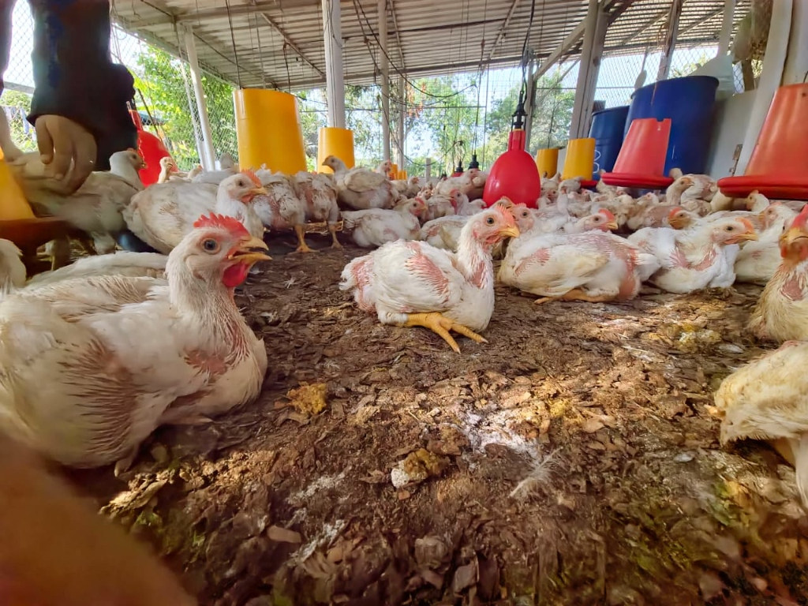

Universidad Técnica de Machala
Facultad de Ciencias Agropecuarias
Carrera de Medicina Veterinaria
Eje académico: Nutrición y alimentación de aves
NUTRICIÓN ANIMAL
RESPONSABLE
Elaboración de alimentos balanceados por fases para pollos de engorde
Cada etapa tiene necesidades diferentes. Cada ingrediente cumple una función.
¿Qué hacemos en la cátedra?
En la cátedra de Nutrición Animal aprendemos a formular, elaborar y evaluar alimentos balanceados para aves, considerando las necesidades nutricionales de cada etapa productiva.
¿Por qué alimentar por fases?
Los requerimientos nutricionales del pollo cambian conforme aumenta su edad. Durante las primeras etapas se requiere una mayor precisión en el aporte de proteína, aminoácidos, vitaminas y minerales. Conforme el ave crece, la fórmula se ajusta para responder a nuevas necesidades de energía, mantenimiento y desarrollo corporal.
¿Qué contiene nuestro alimento balanceado?
Los ingredientes comunes se presentan una sola vez. En cada fase mostramos únicamente aquello que se mantiene, se ajusta o se retira.
Alimentación por fases
Tratamientos A y B
Comparación de fuentes energéticas
Nuestro enfoque responsable
El contenido presentado es informativo y corresponde a una experiencia académica. No reemplaza la formulación realizada por un profesional ni las indicaciones de un médico veterinario.
Así vivimos el proceso
Conoce las actividades realizadas durante la elaboración y evaluación del alimento balanceado.
Conoce al equipo
Cuéntanos tu experiencia
Tu opinión nos ayuda a mejorar nuestras actividades académicas y futuras exposiciones.
Fuentes de consulta
Las fuentes se presentan con fines académicos. La formulación y el uso de productos veterinarios deben realizarse con supervisión profesional y respetando la normativa y las indicaciones de cada producto.